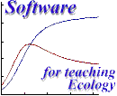

| system |
| home page |
| of Melbourne, Australia A Forum for developing and supporting a network of mathematics educators at primary and secondary schools in their attempts to incorporate . . of Kansas UNITE Group Search a collection of educational resources (instructional software, lab activities, lesson plans, student-created materials . Some packages require industrial or academic users to . , Penn State University Math software resources and online documentation on the Web. |
|  | . Get help, hold discussions and meet other webmasters. Use our resources, and search tools to help you find the perfect web host. Site Tools Web Hosting Make Money Software Design Promotion Services Email Other Free Sites Community Interact with other webmasters. Chat Forums Jobs Topics Games Directory Webmasters resource directory. |
|